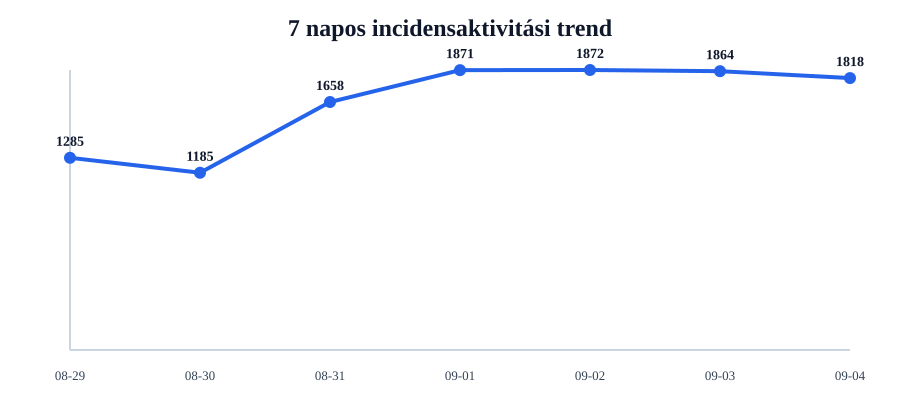
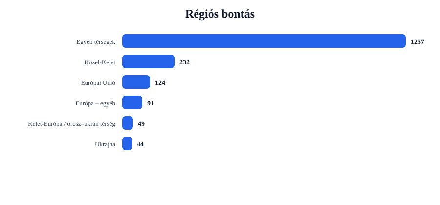
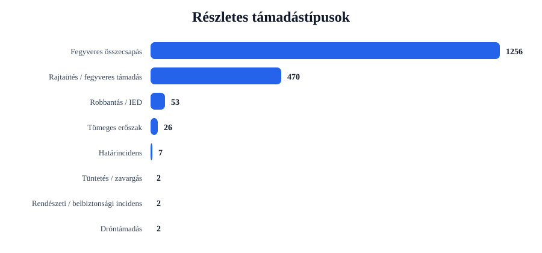
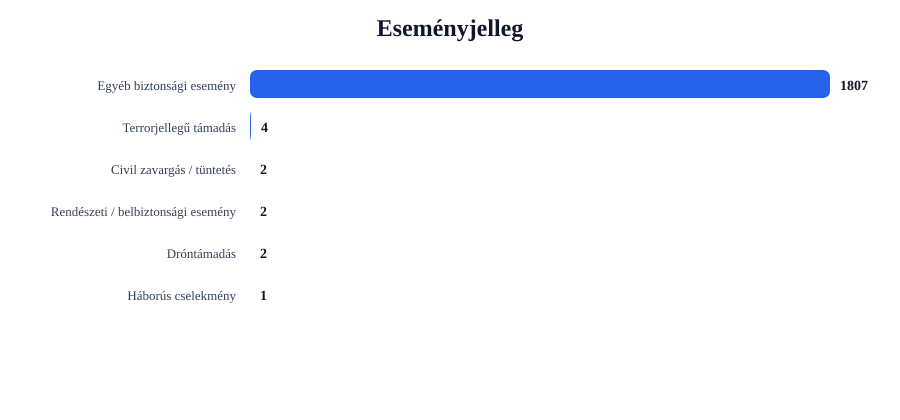

Rövid napi értékelés
Az incidensek száma csökkent: -46 esemény, 2.5% visszaesés.
A legtöbb találat ehhez az országhoz kapcsolódott: United States (601 esemény).
A legerősebb regionális súlypont: Egyéb térségek (1257 esemény).
A leggyakoribb részletes támadástípus: Fegyveres összecsapás (1256 találat).
A leggyakoribb eseményjelleg: Egyéb biztonsági esemény (1807 találat).
A drón-, terrorjellegű és háborús események felismerése kulcsszavas besorolással történik. Ez jó elemzési szűrő, de kézi ellenőrzést továbbra is igényelhet.
Régiós helyzetkép
Európai Unió
Azonosított események száma: 124. Leginkább érintett országok: Ireland (24), Germany (17), Italy (10).
Domináns támadástípusok: Fegyveres összecsapás (90), Rajtaütés / fegyveres támadás (29), Robbantás / IED (4). Domináns eseményjelleg: Egyéb biztonsági esemény (120), Terrorjellegű támadás (4).
| Cím | Ország | Helyszín | Részletes típus | Eseményjelleg | Forrás |
|---|---|---|---|---|---|
| fight – Lower Saxony, Niedersachsen, Germany | Germany | Lower Saxony, Niedersachsen, Germany | Robbantás / IED | Terrorjellegű támadás | us.cnn.com |
| fight – Hanover, Niedersachsen, Germany | Germany | Hanover, Niedersachsen, Germany | Robbantás / IED | Terrorjellegű támadás | www.businesstimes.com.sg |
| fight – Osnabruck, Niedersachsen, Germany | Germany | Osnabruck, Niedersachsen, Germany | Robbantás / IED | Terrorjellegű támadás | www.businesstimes.com.sg |
| fight – Ganderkesee, Niedersachsen, Germany | Germany | Ganderkesee, Niedersachsen, Germany | Robbantás / IED | Terrorjellegű támadás | news.az |
| fight – Germany | Germany | Germany | Fegyveres összecsapás | Egyéb biztonsági esemény | ottawacitizen.com |
Ukrajna
Azonosított események száma: 44. Leginkább érintett országok: Ukraine (44).
Domináns támadástípusok: Robbantás / IED (33), Fegyveres összecsapás (6), Rajtaütés / fegyveres támadás (5). Domináns eseményjelleg: Egyéb biztonsági esemény (44).
| Cím | Ország | Helyszín | Részletes típus | Eseményjelleg | Forrás |
|---|---|---|---|---|---|
| fight – Odesa, Odes'ka Oblast, Ukraine | Ukraine | Odesa, Odes'ka Oblast, Ukraine | Robbantás / IED | Egyéb biztonsági esemény | en.interfax.com.ua |
| fight – Kharkiv, Kharkivs'ka Oblast', Ukraine | Ukraine | Kharkiv, Kharkivs'ka Oblast', Ukraine | Robbantás / IED | Egyéb biztonsági esemény | www.cbc.ca |
| fight – Kherson, Khersons'ka Oblast', Ukraine | Ukraine | Kherson, Khersons'ka Oblast', Ukraine | Robbantás / IED | Egyéb biztonsági esemény | hotair.com |
| fight – Kramatorsk, Donets'ka Oblast', Ukraine | Ukraine | Kramatorsk, Donets'ka Oblast', Ukraine | Robbantás / IED | Egyéb biztonsági esemény | www.globalsecurity.org |
| fight – Ozerne, Zhytomyrs'ka Oblast', Ukraine | Ukraine | Ozerne, Zhytomyrs'ka Oblast', Ukraine | Robbantás / IED | Egyéb biztonsági esemény | www.globalsecurity.org |
Balkán
Azonosított események száma: 21. Leginkább érintett országok: Bosnia-Herzegovina (7), Turkey (5), Albania (5).
Domináns támadástípusok: Fegyveres összecsapás (16), Rajtaütés / fegyveres támadás (3), Tüntetés / zavargás (1). Domináns eseményjelleg: Egyéb biztonsági esemény (20), Civil zavargás / tüntetés (1).
| Cím | Ország | Helyszín | Részletes típus | Eseményjelleg | Forrás |
|---|---|---|---|---|---|
| fight – Turkey | Turkey | Turkey | Fegyveres összecsapás | Egyéb biztonsági esemény | freerepublic.com |
| fight – Belgrade, Serbia (general), | Serbia (general) | Belgrade, Serbia (general), | Fegyveres összecsapás | Egyéb biztonsági esemény | www.dw.com |
| fight – Istanbul, Istanbul, Turkey | Turkey | Istanbul, Istanbul, Turkey | Fegyveres összecsapás | Egyéb biztonsági esemény | www.hurriyetdailynews.com |
| assault – Turkey | Turkey | Turkey | Rajtaütés / fegyveres támadás | Egyéb biztonsági esemény | cyprus-mail.com |
| fight – Ankara, Ankara, Turkey | Turkey | Ankara, Ankara, Turkey | Fegyveres összecsapás | Egyéb biztonsági esemény | warontherocks.com |
Közel-Kelet
Azonosított események száma: 232. Leginkább érintett országok: Iran (39), Israel (30), Pakistan (25).
Domináns támadástípusok: Fegyveres összecsapás (158), Rajtaütés / fegyveres támadás (58), Tömeges erőszak (14). Domináns eseményjelleg: Egyéb biztonsági esemény (230), Civil zavargás / tüntetés (1), Dróntámadás (1).
| Cím | Ország | Helyszín | Részletes típus | Eseményjelleg | Forrás |
|---|---|---|---|---|---|
| fight – Shahed, Fars, Iran | Iran | Shahed, Fars, Iran | Dróntámadás | Dróntámadás | www.irishtimes.com |
| fight – Sirik, Hormozgan, Iran | Iran | Sirik, Hormozgan, Iran | Fegyveres összecsapás | Egyéb biztonsági esemény | www.floridastatesman.com |
| fight – Tehran, Tehran, Iran | Iran | Tehran, Tehran, Iran | Fegyveres összecsapás | Egyéb biztonsági esemény | www.floridastatesman.com |
| fight – Iran | Iran | Iran | Fegyveres összecsapás | Egyéb biztonsági esemény | fox17.com |
| fight – Iraq | Iraq | Iraq | Fegyveres összecsapás | Egyéb biztonsági esemény | www.wsbradio.com |
Kelet-Európa / orosz–ukrán térség
Azonosított események száma: 49. Leginkább érintett országok: Russia (48), Belarus (1).
Domináns támadástípusok: Fegyveres összecsapás (25), Robbantás / IED (16), Rajtaütés / fegyveres támadás (6). Domináns eseményjelleg: Egyéb biztonsági esemény (49).
| Cím | Ország | Helyszín | Részletes típus | Eseményjelleg | Forrás |
|---|---|---|---|---|---|
| assault – Belgorod, Belgorodskaya Oblast', Russia | Russia | Belgorod, Belgorodskaya Oblast', Russia | Robbantás / IED | Egyéb biztonsági esemény | www.aljazeera.com |
| fight – Belgorod, Belgorodskaya Oblast', Russia | Russia | Belgorod, Belgorodskaya Oblast', Russia | Robbantás / IED | Egyéb biztonsági esemény | www.aljazeera.com |
| fight – Kursk, Kurskaya Oblast', Russia | Russia | Kursk, Kurskaya Oblast', Russia | Robbantás / IED | Egyéb biztonsági esemény | www.globalsecurity.org |
| fight – Rostov, Rostovskaya Oblast', Russia | Russia | Rostov, Rostovskaya Oblast', Russia | Robbantás / IED | Egyéb biztonsági esemény | www.eng.kavkaz-uzel.eu |
| fight – Yekaterinburg, Sverdlovskaya Oblast', Russia | Russia | Yekaterinburg, Sverdlovskaya Oblast', Russia | Robbantás / IED | Egyéb biztonsági esemény | www.wsbradio.com |
Európa – egyéb
Azonosított események száma: 91. Leginkább érintett országok: United Kingdom (72), Switzerland (5), Norway (3).
Domináns támadástípusok: Fegyveres összecsapás (61), Rajtaütés / fegyveres támadás (28), Tömeges erőszak (2). Domináns eseményjelleg: Egyéb biztonsági esemény (91).
| Cím | Ország | Helyszín | Részletes típus | Eseményjelleg | Forrás |
|---|---|---|---|---|---|
| fight – London, London, City of, United Kingdom | United Kingdom | London, London, City of, United Kingdom | Fegyveres összecsapás | Egyéb biztonsági esemény | www.novinite.com |
| fight – United Kingdom | United Kingdom | United Kingdom | Fegyveres összecsapás | Egyéb biztonsági esemény | pagesix.com |
| assault – United Kingdom | United Kingdom | United Kingdom | Rajtaütés / fegyveres támadás | Egyéb biztonsági esemény | www.chroniclelive.co.uk |
| assault – London, London, City of, United Kingdom | United Kingdom | London, London, City of, United Kingdom | Rajtaütés / fegyveres támadás | Egyéb biztonsági esemény | www.moneycontrol.com |
| fight – Belfast, Belfast, United Kingdom | United Kingdom | Belfast, Belfast, United Kingdom | Fegyveres összecsapás | Egyéb biztonsági esemény | www.thefastmode.com |
Egyéb térségek
Azonosított események száma: 1257. Leginkább érintett országok: United States (601), India (106), Nigeria (67).
Domináns támadástípusok: Fegyveres összecsapás (900), Rajtaütés / fegyveres támadás (341), Határincidens (7). Domináns eseményjelleg: Egyéb biztonsági esemény (1253), Rendészeti / belbiztonsági esemény (2), Háborús cselekmény (1).
| Cím | Ország | Helyszín | Részletes típus | Eseményjelleg | Forrás |
|---|---|---|---|---|---|
| fight – Brooke Army Medical Center, Texas, United States | United States | Brooke Army Medical Center, Texas, United States | Fegyveres összecsapás | Háborús cselekmény | news4sanantonio.com |
| fight – Guaviare, GuainíCO, Colombia | Colombia | Guaviare, GuainíCO, Colombia | Dróntámadás | Dróntámadás | latinamericanpost.com |
| fight – Ottawa, Ontario, Canada | Canada | Ottawa, Ontario, Canada | Fegyveres összecsapás | Egyéb biztonsági esemény | ottawacitizen.com |
| fight – Toronto, Ontario, Canada | Canada | Toronto, Ontario, Canada | Fegyveres összecsapás | Egyéb biztonsági esemény | www.niagarathisweek.com |
| fight – Washington, District of Columbia, United States | United States | Washington, District of Columbia, United States | Fegyveres összecsapás | Egyéb biztonsági esemény | www.wsbradio.com |
Grafikonos áttekintés




Top 5 kiemelt esemény
| # | Cím | Ország | Helyszín | Részletes típus | Eseményjelleg | Súly | Forrás |
|---|---|---|---|---|---|---|---|
| 1 | fight – Lower Saxony, Niedersachsen, Germany | Germany | Lower Saxony, Niedersachsen, Germany | Robbantás / IED | Terrorjellegű támadás | 26 | us.cnn.com |
| 2 | fight – Hanover, Niedersachsen, Germany | Germany | Hanover, Niedersachsen, Germany | Robbantás / IED | Terrorjellegű támadás | 26 | www.businesstimes.com.sg |
| 3 | fight – Osnabruck, Niedersachsen, Germany | Germany | Osnabruck, Niedersachsen, Germany | Robbantás / IED | Terrorjellegű támadás | 26 | www.businesstimes.com.sg |
| 4 | fight – Ganderkesee, Niedersachsen, Germany | Germany | Ganderkesee, Niedersachsen, Germany | Robbantás / IED | Terrorjellegű támadás | 26 | news.az |
| 5 | fight – Odesa, Odes'ka Oblast, Ukraine | Ukraine | Odesa, Odes'ka Oblast, Ukraine | Robbantás / IED | Egyéb biztonsági esemény | 21 | en.interfax.com.ua |
Napi bontások
Régiók
- Egyéb térségek1257
- Közel-Kelet232
- Európai Unió124
- Európa – egyéb91
- Kelet-Európa / orosz–ukrán térség49
- Ukrajna44
- Balkán21
Országok
- United States601
- India108
- United Kingdom72
- Nigeria67
- Pakistan49
- Canada48
- Russia48
- Ukraine44
- Iran39
- Australia35
Részletes típusok
- Fegyveres összecsapás1256
- Rajtaütés / fegyveres támadás470
- Robbantás / IED53
- Tömeges erőszak26
- Határincidens7
- Tüntetés / zavargás2
- Rendészeti / belbiztonsági incidens2
- Dróntámadás2
Eseményjelleg
- Egyéb biztonsági esemény1807
- Terrorjellegű támadás4
- Civil zavargás / tüntetés2
- Rendészeti / belbiztonsági esemény2
- Dróntámadás2
- Háborús cselekmény1
Források
- timesofindia.indiatimes.com47
- www.yahoo.com45
- www.aol.co.uk34
- www.dailymail.com29
- www.dailykos.com29
- www.globalsecurity.org29
- allafrica.com29
- www.aljazeera.com26
- nypost.com25
- www.winnipegfreepress.com22
Blogra használható intelligence card
Módszertani megjegyzés
Ez a jelentés nyílt forrású, automatizált adatgyűjtés alapján készül. A dróntámadások, terrorjellegű események és háborús cselekmények azonosítása kulcsszavas besorolással történik. Ez elemzési támpont, nem hivatalos minősítés.